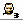
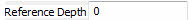

UDN
Search public documentation:
ReferencedAssetsBrowserReferenceJP
English Translation
中国翻译
한국어
Interested in the Unreal Engine?
Visit the Unreal Technology site.
Looking for jobs and company info?
Check out the Epic games site.
Questions about support via UDN?
Contact the UDN Staff
中国翻译
한국어
Interested in the Unreal Engine?
Visit the Unreal Technology site.
Looking for jobs and company info?
Check out the Epic games site.
Questions about support via UDN?
Contact the UDN Staff
UE3 ホーム > 「Unreal」エディタとツール > 参照付きアセットブラウザのリファレンス
参照付きアセットブラウザのリファレンス
概要
参照付きアセットブラウザを開く
ブラウザレイアウト

- メニューバー?
- ツールバー?
- 参照グラフ?
- 参照リスト?
メニューバー
ビュー
- Refresh - Actor リストをリフレッシュする。
ドッキング
- Docked (ドッキング化) - このオプションによって、現在浮遊しているブラウザをメインのブラウザウィンドウにドッキングします。現在のブラウザがドッキングされると、このオプションにチェックが入ります。
- Floating (浮遊) - このオプションによって、ドッキングしているブラウザをメインブラウザから切り離し、独自のウィンドウをもつ浮遊ブラウザにします。現在のブラウザが floating になった場合は、このオプションにチェックが入ります。
- Clone Browser (ブラウザのクローン化) - このオプションによって、現在のブラウザの複製を作ります。
- Remove Browser (ブラウザーの削除) - このオプションは、現在のブラウザを移動すなわち削除します。このオプションは、複製したブラウザウィンドウ上でのみ有効です。
ツールバー
 | (リスト) アセットビューをリストモードに変更する。 |
 | (サムネイル) アセットビューをサムネイルモードに変更する。 |
 | (直接的参照のみ) 直接参照されるアセットのみを表示する。 |
 | (参照すべて) 参照されるアセットすべてを表示する。 |
|   | (カスタムの深度) カスタムの深度をユーザーが設定できるようにする。 |
 | (デフォルトで参照されるアセットを含める) デフォルトで参照されるアセットを表示する。 |
 | (スクリプトによって参照されるアセットを含める) スクリプトによって参照されるアセットを表示する。 |
 | (クラスによるグループ化) クラスによって参照をグループ化する。 |